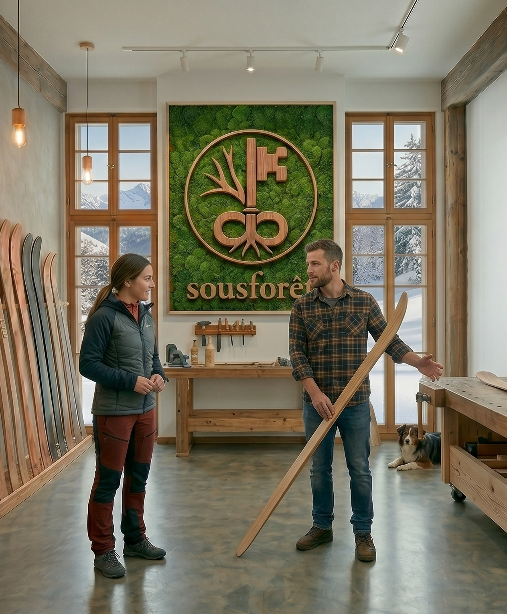

sousforêt
Radical Regionality & Custom Crafts
Radical Regionality & Custom Crafts

Nidwaldner Esche aus den Wäldern rund um Wolfenschiessen bildet das Herzstück. Wir nutzen lokale Ressourcen für Skier, die am Berg performen und eine ehrliche Geschichte erzählen. Nachhaltig, regional, echt.

Von der Sidecut-Planung bis zum letzten Schliff – wir fertigen jedes Paar mit grösster Sorgfalt in unserer Werkstatt in Wolfenschiessen. Ein händisch gefertigtes Unikat, präzise abgestimmt auf deine Bedürfnisse.

Besuche uns in Wolfenschiessen auf ein Fachgespräch. Wir glauben an absolute Transparenz und den direkten Austausch zwischen Bauer und Fahrer. Handwerk zum Anfassen und Spüren direkt an der Hobelbank.
Wir verzichten auf unnötigen Kunststoff und setzen auf die rohe Kraft der Natur. Du wählst zwischen zwei radikal nachhaltigen Konstruktionswegen:
Die Nidwaldner Esche ist bekannt für ihre extremen Rückstellkräfte und Langlebigkeit. Als massiver Holzkern verarbeitet, bietet sie eine unvergleichliche Laufruhe und einen natürlichen Flex, der über Jahre hinweg lebendig bleibt.
Als ökologische Antwort auf synthetische Verbundstoffe nutzen wir hochfeste Flachsfasern. Sie dämpfen Vibrationen effektiver als Carbon oder Glasfaser und machen den Ski spürbar leichter – perfekt für den Aufstieg und stabil in der Abfahrt.
Interaktiver Konstruktionsprozess